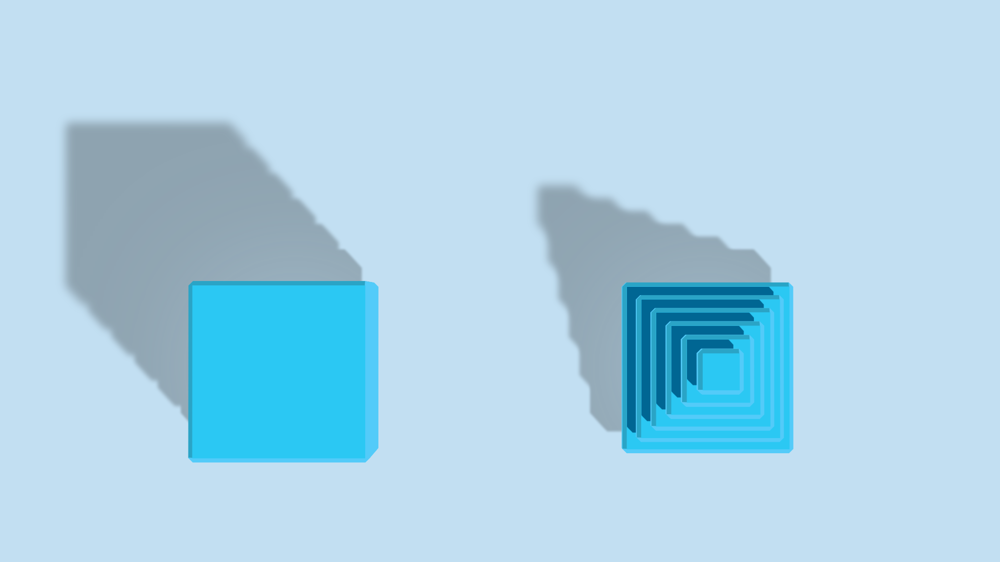
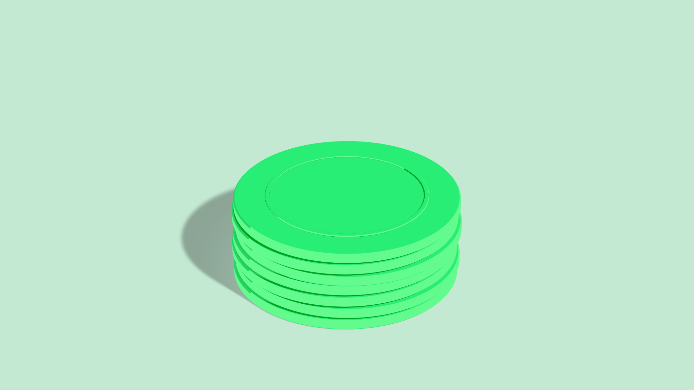

Mockup · 003 · Pieces · Calibration
Two real pieces, redrawn flat.
Each still from landing-site/media/exhibits/ sits beside its SVG at the same size. The SVGs are built by kit/piecekit.py from the Blender scripts' own numbers (camera, sun, sizes), so the nine new pieces drawn with the same kit share this projection, light and palette. Switch to the overlay to see the SVG laid over the render at 50%.
Shadow · sky · duplicate bill
Six plates squared up into a cube and the same six stepped into a tower, seen from straight above (the film's end pose, el 89.5°). The stepped floor shadow and the shadows on each tread come from the plates themselves.


| Measure | Render | SVG | Rule it checks |
|---|---|---|---|
| Objects (cube left edge → tower right edge) | x 482–2028 · y 720–1184 | x 482–2030 · y 720–1184 | camera: 100 mm, dist 14.0 × .97, el 89.5° on (0, .42, 0) |
| Floor shadow reach | x 166 · y 310 | x 162 · y 310 | shadow offset per metre of height (−.714, +.786); 1.06 × height |
| Top face | #2bc8f3 | #2bc8f3 | tops = mid |
| Chamfer facing the sun | #53cffa | #53cbf9 | sun-side chamfers and walls = lit |
| Tread in a plate's shadow | #006799 | #016693 | shadow cast on the hue = shade |
| Floor shadow, far / near the cube | #8ea3b0 / #9db4c3 | #8ea3b0 / #96acba | shadow = floor × ≈.72; a glow lifts it near the foot |
Echo · mint · duplicate payment
Seven coins (r .82, .078 thick, .012 apart, each a hair off square, seed 3 as in the script) with a raised ring on the top face, from the front at 30°.


| Measure | Render | SVG | Rule it checks |
|---|---|---|---|
| Stack | x 858–1702 · y 522–1214 (33% wide) | x 854–1702 · y 522–1214 | camera: 100 mm, dist 14.4 × .965, el 30° on (0, 0, .62) |
| Floor shadow reach (left) | x 668 | x 668 | shadow direction and length; perspective |
| Top face | #28ed74 | #28ee75 | tops = mid |
| Coin wall | #6ef996 | #63fa8e | round walls = lit all round the front |
| Gap between coins | #00a222 (2–3 px) | #00a224 | crevice = deep |
| Floor shadow | #8ba495 | #8ba495 | shadow = floor × ≈.71 |
- What the flat version leaves out: the render's satin sheen (walls brighten a little to the right), the coins' fine milled edge, and the soft terminator at the far left of each wall.
- Rebuild both SVGs with python3 docs/mockups/003-pieces/kit/calib.py from the repo root. The rules are in KIT.md.